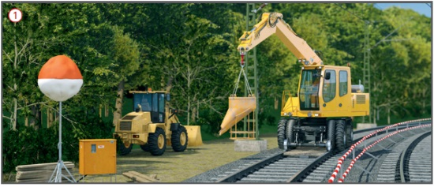
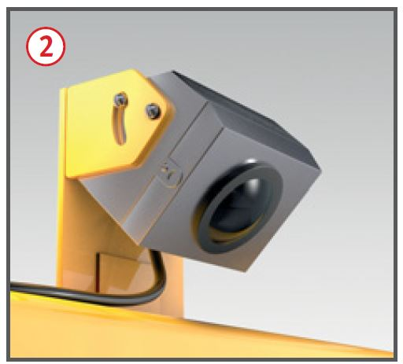
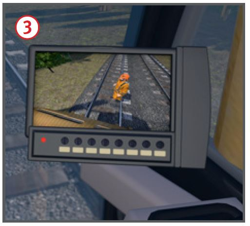
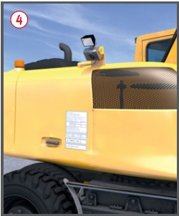

Arbeiten mit Zweiwegebaggern
|
|

Gefährdungen
- Durch Zugfahrten im Nachbargleis,
Bewegungen des Baggers
sowie bei nicht ausgeschalteter
Fahrleitung können Personen
verletzt oder getötet werden.
Allgemeines
- Für Zweiwegebagger (ZWB) müssen
bei Arbeitsvorbereitung und
Betrieb besondere Einsatzbedingungen
berücksichtigt werden:
- Versetzbewegung des Baggers,
- angeschlagene Lasten,
- Bewegen von Eisenbahnwagen,
- Standsicherheit auf dem
Schienenfahrwerk und im überhöhten Gleis,
- Einsatz unter Fahrleitung,
- Einsatz neben Betriebsgleisen.
Arbeitsvorbereitung
- Für das Führen eines ZWB
muss der Bediener qualifiziert
(Triebfahrzeugführerscheinverordnung
TfV), körperlich und
geistig geeignet, sowie zuverlässig sein.
- Notwendige Einweisungen:
- in den eingesetzten ZWB,
- in die Sicherungsanweisungen des Bahnbetreibers (Betriebs- und Bauordnung (Betra), Sicherungsplan),
- in die erforderlichen Streckenverhältnisse.
- Der Zweiwegebagger (ZWB)
hat die Einsatzgenehmigung des
Infrastrukturunternehmens.
- Die für den Bahnbetrieb zuständige Stelle (BzS) legt Ein- und Ausgleisstellen und Sicherungsmaßnahmen zum Schutz vor den Gefahren aus dem Bahnbetrieb fest.
- Beschäftigte in die besonderen Gefährdungen im Arbeitsbereich des ZWB einweisen.
- Bei Nachtbaustellen ausreichende Beleuchtung für alle Arbeits- und Verkehrsbereiche einrichten.
Schutzmaßnahmen
Versetzbewegung des Baggers
- Fahr- und Arbeitsbereich des
Baggers von Personen freihalten
 .
.
Ausnahme: Aufenthalt im Gefahrbereich arbeitsbedingt erforderlich, Sichtkontakt zum Maschinenführer und Warnkleidung, mind. Klasse 2, tragen.
- Zum Fahren Kabine in Fahrtrichtung
drehen, Rückwärtsfahrten vermeiden.
- Im Arbeitsbereich max. 5 km/h,
Anhalten vor Personen im Gleis.
- Zweiwege-Bagger mit Kamera-Monitor-Systemen für Rückraumüberwachung

 und Seitenraumüberwachung
und Seitenraumüberwachung  ausrüsten.
ausrüsten.
- Kamera-Monitor-System darf
nicht zum Beobachten des Fahrweges
bei Rückwärtsfahrt verwendet
werden.
- Nicht zwischen Schienenachse
und Mobilfahrwerk aufhalten.
- Zugriff zum Unterwagen
(Werkzeug, Erdungsanschluss,
Kupplungsstange) nur nach Abstimmung mit dem Baggerfahrer.
- Personenmitnahme nur auf
dem zweiten Platz in der Kabine.
Bewegen von Eisenbahnwagen
- Zulässige Anhängelast und
Gleisneigung beachten (Anschriftentafel).
- Bei gebremster Anhängelast
alle Wagen an die Luftleitung anschließen.
- Bei geschobenen Wagen:
Spitzenbesetzung mit Luftbremskopf und Funkverbindung zum Baggerbediener (Triebfahrzeugführer).
- Kuppelstangen müssen vom
Bahnbetreiber zugelassen sein.
- Abzustellende Wagen mit
Hemmschuhen sichern.
- Personenmitfahrt auf Wagen
nur auf zugelassenem Standplatz.



Aushebeeinrichtung
- Notabsenkung des ausgehobenen Schienenfahrwerks
muss bei Ausfall von Antrieb
oder Elektrik möglich sein.
- Gleismagnete der induktiven
Zugsicherung im ausgehobenen
Zustand überfahren. Demontage
der äußeren Mobilreifen ist unzulässig.
- Regelungen des Infrastrukturunternehmens
für das Überfahren von Gleisschaltmitteln
beachten.
Hebezeugeinsatz und Standsicherheit
- Bagger mit Lasthaken, Lastmomentwarneinrichtung,
Leitungsbruchsicherungen an den Auslegerzylindern und
Traglasttabelle ausrüsten.
- Das zulässige Lastmoment ist
von der Einsatzart abhängig:
Straßenfahrwerk, Schienenfahrwerk
oder Pratzen.
- Das zulässige Lastmoment
wird durch die Gleisüberhöhung
im Bogen wesentlich verringert –
bis zu 30 % (wird nicht bei allen
Baggern durch die Lastmomentwarneinrichtung erfasst).
- Erforderliche Pratzenstandflächen auch neben Bahnsteigen,
Stromschienen und auf der festen Fahrbahn bereitstellen.
- Nur Lastaufnahmemittel und
Anschlagmittel verwenden, die geeignet, als ausreichend tragfähig gekennzeichnet, unbeschädigt
und regelmäßig geprüft sind.
- Hebezeugbetrieb mit Auslegerverlängerungen
nur mit Zweiwegebaggern, die mit Lastmomentabschalteinrichtung ausgerüstet sind.
- Nur Schienenhebezangen mit
Sperre gegen unbeabsichtigtes Öffnen verwenden.
- Führen von Lasten durch Mitgänger
vermeiden. Stattdessen Wagen zum Transport einsetzen.
Einsatz unter Fahrleitungsanlagen
- Die spannungsführenden Teile der Fahrleitungsanlage im Arbeitsbereich grundsätzlich vom Betreiber ausschalten und erden lassen. Der Einsatz unter eingeschalteter Fahrleitungsanlage ist nur in Ausnahmefällen möglich.
- Arbeitshöhe von Lastaufnahmeeinrichtungen verringern (Traversen).
- Wenn Bahnerdung über Schienenfahrwerk vorhanden: Hubbegrenzung auf den Schutzabstand einstellen (Federwege und Wippbewegungen berücksichtigen).
- Bei Betrieb auf Mobilfahrwerk auf Schotter/Boden: Bahnerdung.
- Laden von Schwellen nur bei ausgeschalteter Fahrleitung.
Einsatz neben Betriebsgleisen
- Bei akustischer Warnung eine Wahrnehmbarkeitsprobe unter ungünstigsten Arbeits- und Umgebungsbedingungen durchführen.
- Bei Betrieb auf Schienenfahrwerk
Schwenkbegrenzung einsetzen und Rüstzustand beachten (seitlich verstellbarer Ausleger, Schaufelbreite).
- In ein benachbartes Gleis darf
nur geschwenkt werden, wenn dieses gesperrt ist.
- Unbeabsichtigtes Schwenken
ins Betriebsgleis muss verhindert werden (Sicherungsmaßnahmen durch die BzS festlegen lassen).
- Verlassen des Baggers nur zur gleisfreien Seite und in Abstimmung mit dem Aufsichtführenden.
Einsatz im Tunnel
- Zweiwegebagger mit Dieselpartikelfilter ausrüsten.
- Ausreichende Beleuchtung
sicherstellen.
07/2021